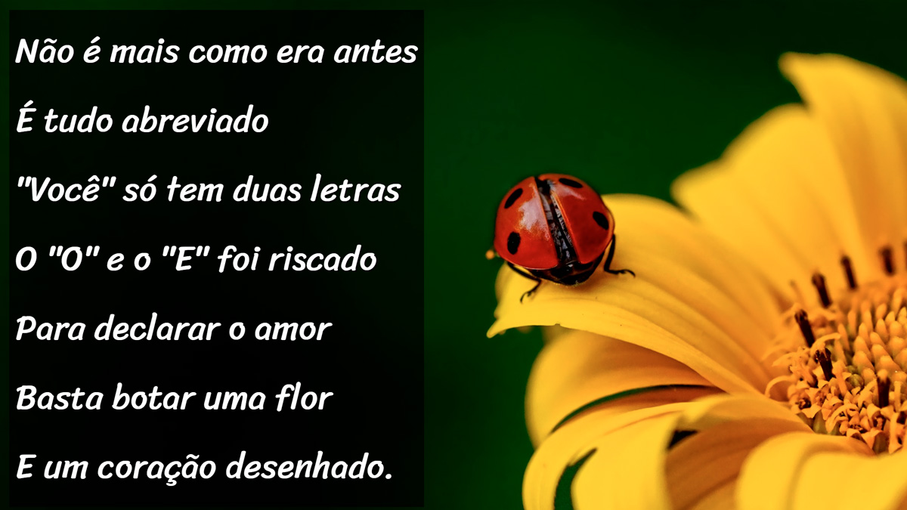

Luis Carlos Wittlich
Estudante de Análise e Desenvolvimento de Sistemas pela Uninter, atualmente estudando HTML 5 e CSS 3, proximos estudos JavaScrip e SQL, adoro a área da computação e estou sempre pronto para enfrentar novos desafios!
Atualmente estou procurando engressar na área de tecnolgia e atuar no ramo, sempre fui apaixonado por programação.
Minhas Skills
HTML5
90%
CSS 3
80%
Python
20%
JavaScript - LOADING
0%
SQL - LOADING
0%
Conhecimento de Hardware
90%
Comunicação
95%
Adaptabilidade
85%
Trabalho em Equipe
90%
Formação
2025 - 2027 Cursando
Analise e Desenvolvimento de sistemas -Uninter
Técnicas para desenvolvimento de sistemas em diversas linguagens de programação
2011-2013
Curso de informatica básica - CIPEC
Técnicas e proeficiêcnia em Excel, Word, Powerpoint, navegação em sistema, etc.
2007 - 2018
Inglês Básico ao Avançado
Desenvolvi proeficiência em Inglês nas áreas de writing, speech, listening and reading.
Projetos

2025
Projeto de Videos
Projeto Videos 2x2
Saiba mais...
Primeiro projeto criado, para treinar habilidades de links e inserção de imagens dentro do projeto, além da navegação entre páginas dentro do próprio projeto. Projeto construido para treinar a inserção de videos em layout 2x2, nos primeiros passos da programação em HTML5 e CSS3.

2025
Projeto Android
Projeto site Android
Saiba mais...
Projeto foi um dos primeiros desafios, criar um site adaptativo a partir do zero, contendo imagens adaptativas para diferentes tipos de telas, o conteudo e toda a estilização como degrades e cores.

2025
Projeto Cordel-Moderno
Projeto Cordel-Moderno.
Saiba mais...
Neste projeto fui desafiado a realizar o efeito Paralax, utilizando Divs entre cada seção do projeto, com imagens com configurações de imagem, como cover, attachment and position, para criar o efeito de Paralax no projeto.

2025
Projeto Redes Sociais
Projeto Redes Sociais no iframe
Saiba mais...
Projeto destinado a desenvolver a utilização de iframes, a criação de menu laterais, assim como a habilidade de centralização(ainda não utilizado o flex-box). Utilizei o iframe para tornar a imagem da tela do celular interatica, para dar a impressão de estar realmente utilizando um dispositivo mobile.

2025
Projeto Tela de login
Projeto tela de login com centralização e media querries.
Saiba mais...
Projeto desenvolvido para desenvolver habilidades de conteiner, utilizando propriedades de centralização(ainda não é utilizado flex-box), utilizei a propriedade de transform(translate) para obter a centralização do conteudo tando em telas pequenas e grandes, e a utilização de media querries, para assim que o tamanho da Viewport aumente, o layout do projeto mude.